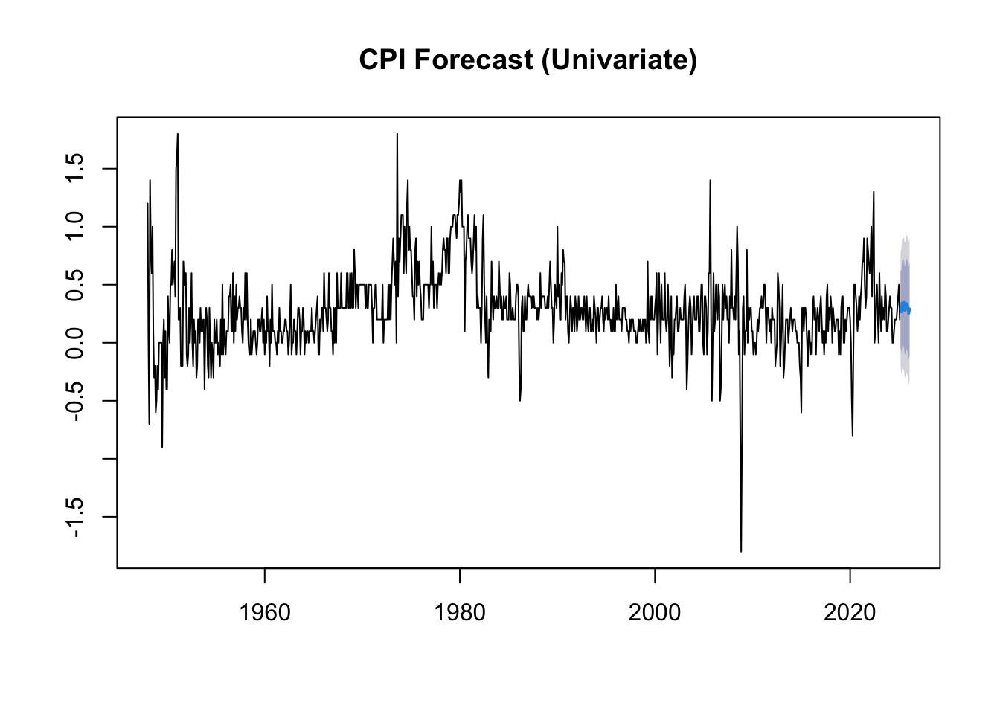

Rows: 79 Columns: 13
── Column specification ────────────────────────────────────────────────────────
Delimiter: ","
dbl (13): Year, Jan, Feb, Mar, Apr, May, Jun, Jul, Aug, Sep, Oct, Nov, Dec
ℹ Use `spec()` to retrieve the full column specification for this data.
ℹ Specify the column types or set `show_col_types = FALSE` to quiet this message.
Rows: 78 Columns: 13
── Column specification ────────────────────────────────────────────────────────
Delimiter: ","
dbl (13): Year, Jan, Feb, Mar, Apr, May, Jun, Jul, Aug, Sep, Oct, Nov, Dec
ℹ Use `spec()` to retrieve the full column specification for this data.
ℹ Specify the column types or set `show_col_types = FALSE` to quiet this message.
# ==============================================# Step 3: Merge the Datasets# ==============================================# Merge by year and monthcombined_data <-left_join(cpi_long, unemp_long, by =c("year", "month"))
# ==============================================# Step 4: Create Date Variable# ==============================================combined_data <- combined_data |>mutate(date =as.Date(paste(year, month, "01", sep ="-"), format ="%Y-%B-%d") ) |>arrange(date)
Augmented Dickey-Fuller Test
data: data_ts[, "unemployment_rate"]
Dickey-Fuller = -3.9518, Lag order = 9, p-value = 0.01141
alternative hypothesis: stationary
# ==============================================# Step 8: Differencing if Necessary# ==============================================# If either series is non-stationary (p-value > 0.05), differencediff_data_ts <-diff(data_ts)
# ==============================================# Step 9: Select Lag Length# ==============================================lag_selection <-VARselect(diff_data_ts, lag.max =12, type ="const")print(lag_selection$criteria)
# Choose the best lag (example: 2 lags)selected_lag <-2
Var Estimation
# ==============================================# Step 10: Fit VAR Model# ==============================================var_model <-VAR(diff_data_ts, p = selected_lag, type ="const")summary(var_model)
Rows: 79 Columns: 13
── Column specification ────────────────────────────────────────────────────────
Delimiter: ","
dbl (13): Year, Jan, Feb, Mar, Apr, May, Jun, Jul, Aug, Sep, Oct, Nov, Dec
ℹ Use `spec()` to retrieve the full column specification for this data.
ℹ Specify the column types or set `show_col_types = FALSE` to quiet this message.
Rows: 78 Columns: 13
── Column specification ────────────────────────────────────────────────────────
Delimiter: ","
dbl (13): Year, Jan, Feb, Mar, Apr, May, Jun, Jul, Aug, Sep, Oct, Nov, Dec
ℹ Use `spec()` to retrieve the full column specification for this data.
ℹ Specify the column types or set `show_col_types = FALSE` to quiet this message.
# ADF Test for CPIadf_test_cpi <-adf.test(na.omit(data_ts[, "cpi"]))
Warning in adf.test(na.omit(data_ts[, "cpi"])): p-value smaller than printed
p-value
print(adf_test_cpi)
Augmented Dickey-Fuller Test
data: na.omit(data_ts[, "cpi"])
Dickey-Fuller = -4.2151, Lag order = 9, p-value = 0.01
alternative hypothesis: stationary
# ADF Test for Unemployment Rateadf_test_unemp <-adf.test(na.omit(data_ts[, "unemployment_rate"]))print(adf_test_unemp)
Augmented Dickey-Fuller Test
data: na.omit(data_ts[, "unemployment_rate"])
Dickey-Fuller = -3.9518, Lag order = 9, p-value = 0.01141
alternative hypothesis: stationary
# Install if needed# install.packages("forecast")library(forecast)
# Create ts objects for each variablecpi_ts <-ts(combined_data$cpi, start =c(min(combined_data$year), 1), frequency =12)unemp_ts <-ts(combined_data$unemployment_rate, start =c(min(combined_data$year), 1), frequency =12)
# Fit separate ARIMA modelscpi_arima <-auto.arima(na.omit(cpi_ts))unemp_arima <-auto.arima(na.omit(unemp_ts))# Forecast each individuallycpi_forecast <-forecast(cpi_arima, h =12)unemp_forecast <-forecast(unemp_arima, h =12)
# Plot forecastsplot(cpi_forecast, main ="CPI Forecast (Univariate)")

plot(unemp_forecast, main ="Unemployment Rate Forecast (Univariate)")